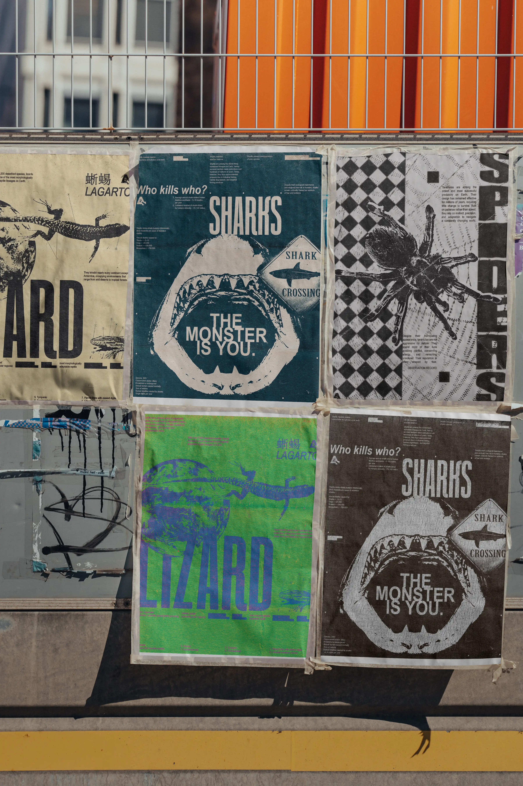
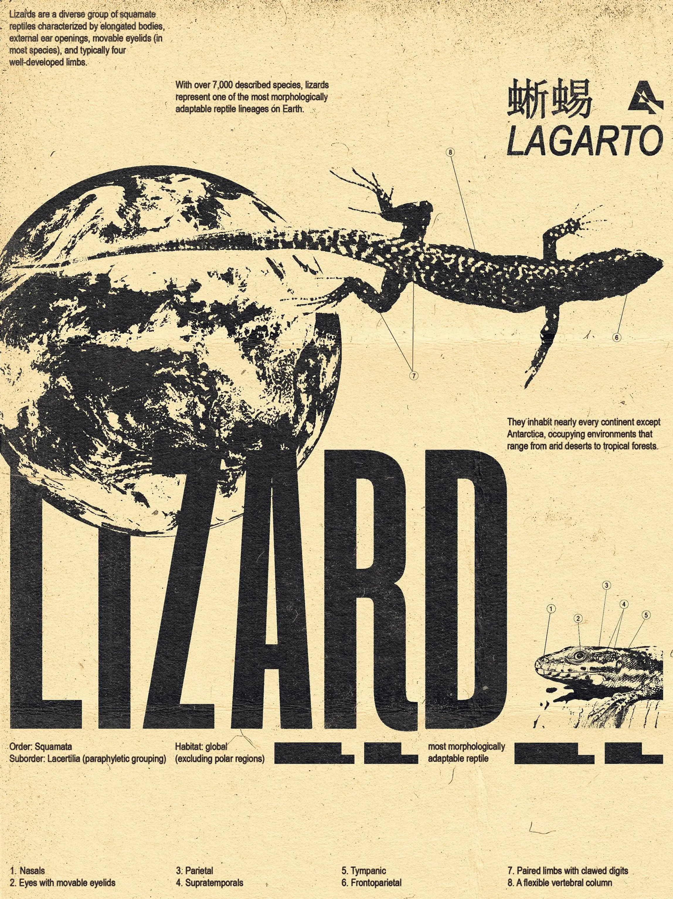
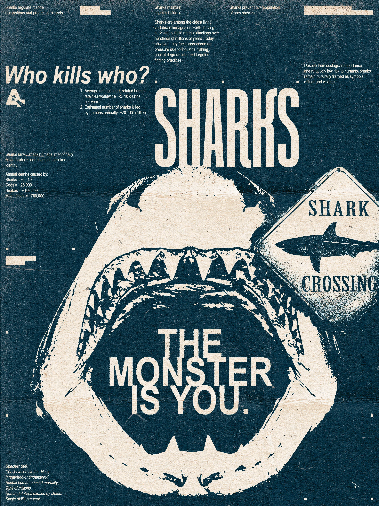

LIZARD | SHARKS | SPIDERS
Серия брутальных постеров

ЗАДАЧА
Исследовать, как сочетание научной визуальной коммуникации, типографического брутализма и выразительной графики может менять восприятие животных и превращать информационный постер в самостоятельное высказывание.
РЕШЕНИЕ
Объединила серию общей визуальной системой: крупная конденсированная типографика, жёсткая композиция, информационные плашки, анатомические изображения, классификация и контрастные графические акценты. Каждый постер сочетает эстетику научного архива с современным бруталистским подходом.
РЕЗУЛЬТАТ
Создала серию из трёх концептуальных постеров — акул, ящериц и тарантулов. Проект стал экспериментом с типографикой, композицией и визуальной подачей научной информации, объединяя образовательный контекст с выразительным графическим дизайном.
Самостоятельный проект о животных, построенный на контрасте научной объективности и эмоционального восприятия. Акулы, ящерицы и тарантулы выбраны как существа, вызывающие сильные реакции, ассоциации или стереотипы. Через эстетику научных публикаций, архивных материалов и типографического брутализма серия переосмысляет привычный образ животных, представляя их не как объекты страха или экзотики, а как сложные биологические системы.
Определила общую концепцию серии — соединить научную подачу информации с жёстким, выразительным графическим языком. Каждый постер раскрывает отдельный аспект восприятия животных: стереотипы, биологию и адаптацию.
Экспериментировала с композицией, масштабом изображений, расположением информационных блоков и взаимодействием текста с визуальным материалом. Искала баланс между информативностью, напряжением и выразительностью.
Использовала крупные конденсированные гротески, жёсткую композиционную структуру, фрагментированные текстовые блоки и контраст масштабов. Визуальные приёмы научных атласов дополнила бруталистской типографикой и фактурами архивной печати.
Разработала три постера в единой визуальной системе, адаптируя композицию, информационную плотность и графические акценты под особенности каждого животного и содержание конкретного высказывания.


![[Постер 3]](../assets/img/spiders.webp)